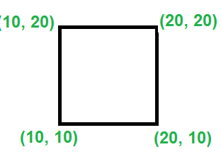

Given coordinates of four points in a plane, find if the four points
form a square or not.
To check for square, we need to check for following.
a) All fours sides formed by points are same.
b) The angle between any two sides is 90 degree.
(This condition is required as Quadrilateral also has same sides.
c) Check both the diagonals have same distance.

**NOTE: Formula to find distance between two points P1(p1x, p1y) and P2(p2x, p2y): (p1x - p2x)^2 + (p1y - p2y)^2